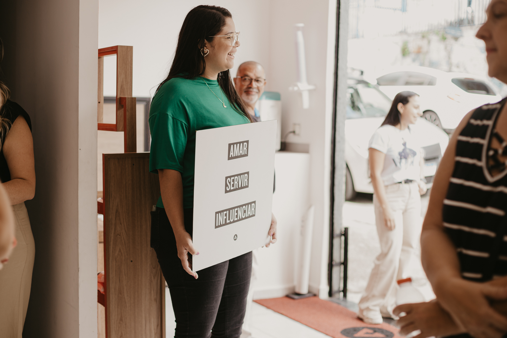
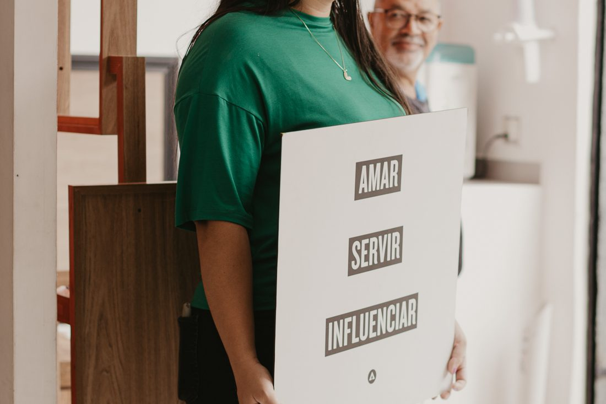
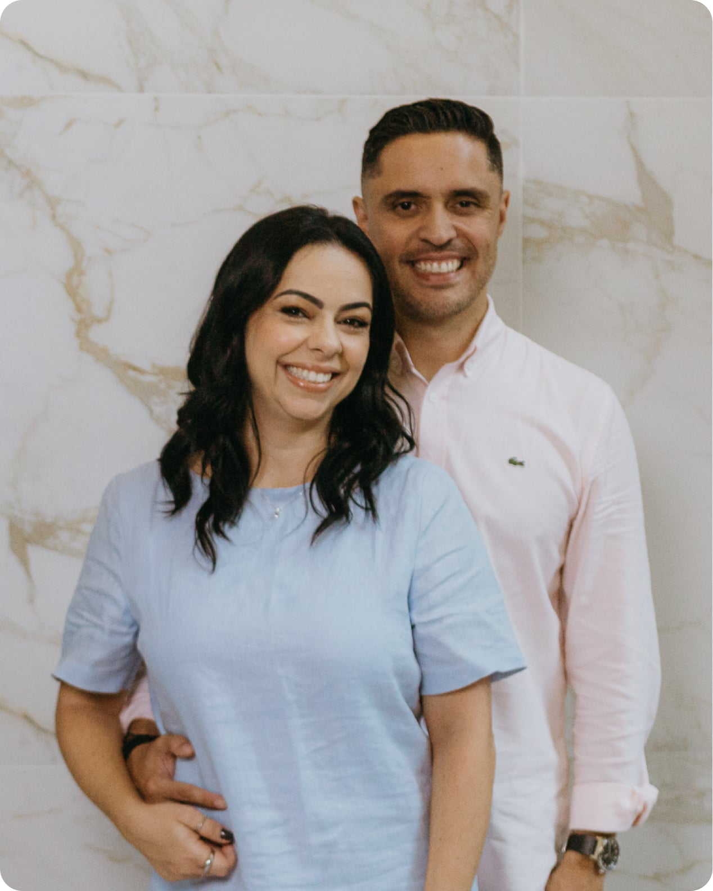

Culto 50+
· Campestre, 17h
Referência viva do arquivo Figma adai.com.br (desktop 1440px). Cada decisão tem uma marcação de origem. Tablet e mobile não existem no Figma: tudo abaixo de 1024px é proposta.
Paleta monocromática. As cinco primeiras são variáveis locais do Figma.
--black · cor/preto#000000ObservadoTexto, botão primário, barra de anúncio.--white · cor/branco#FFFFFFObservadoFundo, texto sobre foto, botão claro.--gray-100 · cor/superficie#F2F2F2ObservadoFooter, cards, caixas.--gray-200 · cor/superficie-2#E8E8E8Observado PropostoCor observada; uso como hover de card é proposta.--gray-500 · cor/cinza#777777ObservadoSó para bordas e ícones. Falha AA em texto normal.--color-text-muted#6B6B6BProposta de acessibilidadeTexto secundário em branco e em #F2F2F2.--gray-900#333333Derivado PropostoFundo atrás de fotos (já extraído no projeto); hover do primário é proposta.--gradient-media-overlay60% → 5% a 65%ObservadoGarante leitura de texto branco sobre foto (Hero 1:34).--color-alert#B3471DPropostoErro de formulário, sempre com ícone e texto. Reaproveita primitivo já proposto no projeto.| Texto | Fundo | Razão | Resultado |
|---|---|---|---|
| #000000 | #FFFFFF | 21,00:1 | AA e AAA |
| #000000 | #F2F2F2 | 18,76:1 | AA e AAA |
| #000000 | #E8E8E8 | 17,14:1 | AA e AAA |
| #FFFFFF | #000000 | 21,00:1 | AA e AAA |
| #777777 Observado | #FFFFFF | 4,48:1 | Falha em texto normal (top bar, legenda) |
| #777777 Observado | #F2F2F2 | 4,00:1 | Falha em texto normal |
| #6B6B6B Proposta | #FFFFFF | 5,33:1 | AA |
| #6B6B6B Proposta | #F2F2F2 | 4,76:1 | AA |
| #6B6B6B | #E8E8E8 | 4,35:1 | Falha: não usar texto suave em superfície 2 |
| #B3471D Proposto | #FFFFFF | 5,47:1 | AA |
| Borda #777777 | #FFFFFF | 4,48:1 | ≥ 3:1 para contorno de campo |
Suisse Intl é a fonte observada; sem licença web, nada é incorporado. Pilha: "Suisse Intl", "SuisseIntl-Book", "Inter Tight", Inter, Arial, Helvetica, sans-serif. Tamanhos em 1440px Observado; mínimos do clamp() Proposto. Tracking do Figma em % = em no CSS.
Amar.
Neste domingo
Ecossistema ADAI
Encontro FLORES
Nov
14
Tem um lugar pra você aqui.
Unidades · Mensagens · Agenda · Ministérios
Campestre, 17h
Sobre nós · Localidades · Contribua · Contato
Planeje sua visita
Estilo citado na spec; não apareceu nas variáveis lidas. Até a confirmação, usar Corpo (18) para textos de abertura.
SuisseIntl-Book · 450 Observado
Servir as pessoas
Textos, menus, legendas, endereços e apoios.
SuisseIntl-Bold · 700 Observado
Servir as pessoas
Displays, títulos, números, datas e ações.
Bold para o que precisa ser escaneado: título, número, rótulo de lista e ação. O corpo fica em Book.
Parágrafo inteiro em Bold, Bold para dar ênfase a várias palavras na mesma frase ou título em Book: quebra a hierarquia observada no Figma.
Medidas lidas nos nós extraídos Observado. Seção de 120px e coluna de 86,4px são recorrências Derivado. Mínimos fluidos Proposto.
--space-1010 · entre botões do hero--space-1212 · CTAs do header, grade de unidades e eventos--space-1414 · data → título no card de evento--space-2020 · texto → botões no hero--space-2222 · padding do card de evento--space-2424 · padding do card de unidade e recuo do campo--space-2828 · links da top bar--space-3232 · itens do menu--space-4040 · colunas do footer--space-5656 · padding interno do hero--space-7272 · padding das caixas cinza--space-page-margin80 · margem lateral das seções (16 no mobile, proposta)--space-coluna86,4 · foto ↔ texto--space-9696 · topo do footer--space-section120 · respiro vertical de seção (64 no mobile, proposta)| Item | Valor | Origem |
|---|---|---|
| Shell | 1440px | Observado |
| Container de conteúdo | 1280px + margens de 80px | Observado |
| Gutter do header e top bar | 43,2px (3%) | Observado |
| Mobile | base, até 768px: 1 coluna, margem 16 | Proposto |
| Tablet | min-width: 769px: 2 colunas onde couber | Proposto |
| Desktop | min-width: 1024px: grades do Figma | Derivado |
Shell de 1440px (--container-max) Observado, conteúdo de 1280px (--content-max) Observado com margens de 80px (--space-page-margin), que caem para 16px no mobile Proposto. Header e top bar usam o gutter de 3% (--space-gutter, 43,2px em 1440).
Quatro variáveis locais, escolhidas pela função e pelo tamanho da superfície.
--radius-sm · 14 Observado--radius-md · 20 Observado--radius-lg · 28 Observado--radius-pill · 999 ObservadoTrês estilos observados no componente Botão (237:1253): 52px, pílula, Botão 16 Bold, padding lateral 28,5 a 29,5. O Contorno escuro e a altura de 40px vêm do header. Estados hover, foco, ativo e desabilitado não existem no Figma Proposto. Os exemplos “hover”, “foco” e “ativo” abaixo simulam o estado e não são interativos.
Primário Observado
Contorno escuro Observado no header

Claro e Contorno sobre foto Observado
Sublinhado observado na barra de anúncio e na borda inferior de “Como chegar”. Foco visível é Proposto: anel de 3px com afastamento de 3px, preto em fundos claros e branco em fundos escuros ou fotos. Use Tab nesta área para conferir.
Link no texto: conheça no que acreditamos antes da sua visita.
Como chegar à unidade Campestre Observado
Links fora de contexto ganham complemento só para leitor de tela: “Como chegar” vira “Como chegar à unidade Santos”.
Sobre fundo escuro: inscrever-se no Alpha
Os quatro cards do Figma. O card inteiro é clicável por um único link (sem link aninhado), com o nome acessível igual ao título.
Card / Unidade Observado
234:998 · 261 × 360 na Home; o componente mede 261 × 480 e seu interior não foi extraído. Fundo e raio: proposta.
Card / Evento Observado
· Campestre, 17h
237:1199 · 329,41 × 398 · superfície, raio 20, padding 22, gap 14.
Card / Evento agenda Proposto

CampestreUma noite inteira de adoração com a ADAI Music.
238:1236 · 443 × 413 observado. Anatomia proposta a partir do card da Agenda em revisão no PR #10 (arte 16:9, selo da unidade); interior do nó não extraído.
Card / Página relacionada Proposto

A visão que guia cada passo da ADAI.
234:1010 · 443,2 × 508 observado; anatomia proposta até extrair o nó.
O Figma tem um único campo (“Seu melhor e-mail”, 420 × 52, recuo 24) Observado. Rótulo visível, borda, raio, estados e erro são Proposto. O erro nunca depende só da cor: tem ícone, texto e aria-invalid.
Digite um e-mail válido.
Tudo nesta lista é Proposto: o Figma só tem desktop.
Texto e imagem empilhados, mantendo a ordem do HTML; grades em uma coluna; eventos em trilho com rolagem horizontal própria; menu compacto com botão “Menu”; títulos fluidos com clamp() e text-wrap: balance, sem nowrap; controles com 44 × 44px no mínimo.
Duas colunas para unidades e formulário; três colunas de links no footer; lista “Primeira vez” com rótulo de 170px ao lado do texto.
Grades observadas: 5 unidades, 4 eventos, foto + texto com 86,4px, footer 1,4fr / 1fr / 1fr / 1fr.
Landmarks, um único h1, hierarquia h2 → h3, skip link, foco visível, labels visíveis, resumo de erros com links, prefers-reduced-motion, prefers-contrast e forced-colors.
Composição completa com barra de anúncio, top bar, header, hero, editorial, grade de cards, próximos eventos, CTA, formulário e footer. Abra o template de página em tela cheia para navegar por teclado e testar o formulário.
Todas as pranchas e componentes considerados, com o nível de leitura feito nesta sessão. O Figma bloqueou novas chamadas (limite do assento View) após nove leituras; os itens sem extração própria usam valores já registrados no projeto e estão marcados como tal.
| Nó | Prancha | Padrão no protótipo | Leitura |
|---|---|---|---|
1:3 | Home / Desktop | Página típica inteira | Estrutura completa, hero, variáveis e estilos |
4:270 | Unidade / Campestre | Hero + editorial + cards + FAQ | Valores do projeto (Hero / Campestre 28:419, Ministérios 28:462) |
220:18960 | Nossa História | Institucional: hero + editorial + relacionadas | Só ID e rota |
220:19032 | A Igreja Que Vemos | Institucional | Só ID e rota |
220:19107 | No que cremos | Institucional | Só ID e rota |
220:19183 | Jesus | Institucional + CTA | Só ID e rota |
220:19253 | Agenda | Card / Evento agenda | Só ID e rota (Agenda em revisão no PR #10) |
220:19333 | Contribua | CTA de destaque | Textos da seção Contribua da Home |
220:19389 | Nossa Casa | Editorial + CTA | Só ID e rota |
220:19607 | Connect | Editorial + cards | Só ID e rota |
220:19491 | Contato | Formulário | Só ID e rota |
253:1255 | Template · Ministério | Hero + editorial + eventos + relacionadas | Só ID |
255:1357 | Template · Próximo passo | Hero + lista + formulário | Só ID |
256:1459 | Template · Evento | Hero + detalhes + cards de agenda | Só ID |
257:1560 | Template · Mensagens | Caixa cinza + cards de parte | Valores do projeto (Mensagens 1:133–1:152) |
| Nó | Componente | Leitura |
|---|---|---|
244:1256 | Barra de anúncio | Observado completo |
233:21 | Top bar | Observado completo |
233:48 | Header | Observado completo + logo SVG |
233:106 | Footer | Derivado da extração já registrada (Footer 1:306) |
237:1253 · 237:1246 · 237:1249 · 237:1252 | Botão (conjunto) · Claro · Contorno · Primário | Observado completo |
234:998 | Card / Unidade | Observado pela instância da Home; componente não extraído |
237:1199 | Card / Evento | Observado completo |
238:1236 | Card / Evento agenda | Proposto; só dimensões |
234:1010 | Card / Página relacionada | Proposto; só dimensões |